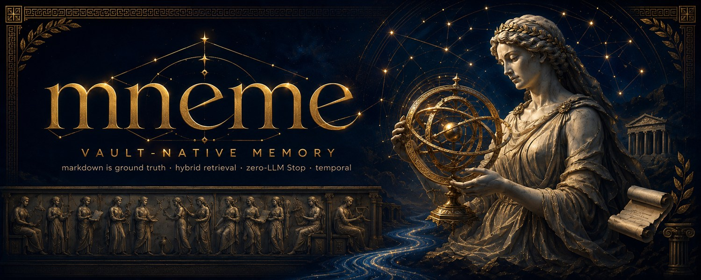

Memory you can audit,
not just trust.
Accountable, vault-native memory for Claude Code and any MCP client. Your Markdown vault stays the source of truth. Everything derived from it is rebuildable, never authoritative. No LLM on the critical path. Redaction before every store.
pipx install mneme-cc-plugin && mneme install
rebuildable
never authoritative
rebuildable
rebuildable

mneme takes its name from Mnemosyne, the Greek personification of memory and mother of the nine Muses. Memory is the ground truth from which everything else is recalled.
3.6.0 is ready for human review
Ten engineering loops closed the scope, temporal, lifecycle, packaging, and release-provenance gaps. The candidate is green at its reviewed SHA. Merge, tag, and package publication remain separate human-controlled gates.
- Isolation
- Concrete scopes fail closed. Cross-scope reads require an explicit scope: "*". Durable writes reject the wildcard.
- Temporal
- One deterministic planner applies valid time and transaction time across claim and graph-enabled paths.
- Compatibility
- Markdown stays unchanged. Legacy unscoped indexes require mneme index rebuild before concrete-scope reads.
- Verification
- 19 required checks passed across Python 3.11–3.14, Node 22 and 24, Linux, macOS, Windows, CodeQL, benchmarks, packages, and the release dry run.
Three things that never change
These guarantees hold regardless of configuration. A user config can never override a built-in invariant.
Markdown is the source of truth
Your .md files live in your vault. Every derived store — full-text index, lexical-vector experiment, knowledge graph, summaries — is computed from them and fully rebuildable from scratch. Nothing derived is ever authoritative.
No LLM on the Stop or critical path
Capture is fully deterministic. The Stop hook never calls a model or makes a network request. Work is captured synchronously and heavy processing happens in the background — off the hot path entirely.
Redaction before every derived store
Configured redaction patterns run before anything is written to any index, lexical-vector store, telemetry sink, or knowledge graph. A user-level config can never weaken a built-in privacy mode — the gate is enforced at the system layer.
How it works
A deterministic pipeline from your vault to queryable, rebuildable derived stores. No model on the write path.
Get started in three commands
Install whichever components fit your setup — the Claude Code plugin, the core engine, or the standalone MCP server for any MCP client.
Plugin
pipx install mneme-cc-plugin && mneme install
Installs the plugin and wires the Stop hook into your local Claude Code instance.
Core Engine
pip install mneme-core
Standalone engine: scoped FTS5 retrieval, temporal claims, redaction, lifecycle tools, and the benchmark harness.
MCP Server
npm install -g mneme-mcp-server
Provides the mneme-mcp command. Use with any MCP-compatible client.
Benchmarks
Reproducible 3.6.0 release-candidate regression anchors measured on a seeded synthetic corpus. Not real-world or cross-product superiority claims.
Know the boundary before you install
Mneme separates the open-source default, explicit opt-in surfaces, and capabilities that are not shipped. The 3.6.0 candidate makes no semantic-model, managed-cloud, or market-leadership claim.
| Surface | 3.6.0 candidate | Evidence boundary |
|---|---|---|
| Open-source default | Markdown ground truth, scoped FTS5 BM25, deterministic Stop and summaries, temporal claims | No model download, cloud account, or network call on the Stop path |
| Explicit opt-in | LLM compression, CCE, connectors, Graphiti with Neo4j, age-encrypted git sync | External providers and graph services run only when configured by the operator |
| Retrieval experiment | Feature-hashed lexical vectors and RRF are available to tests and the benchmark harness | Not wired into production MCP search. Not semantic or dense retrieval |
| Not shipped in the base package | Real semantic model, managed Mneme cloud, multi-user ACL dashboard | These remain outside the 3.6.0 candidate surface |
For the evidence-classified landscape across OSS default, OSS opt-in, hosted, research, and not-evidenced surfaces, read the official-source capability review.
Opt-in, local-first extensions
All modules are off by default. Nothing phones home. Enable only what you need.
Code & Vault Knowledge Graph
tree-sitter parsing for Python, JavaScript, and TypeScript extracts symbols, call graphs, and module boundaries. A deterministic, zero-API Obsidian layer turns notes into a typed knowledge graph — wikilinks, tags, embeds, and headings as nodes and edges — with modularity clustering, a content-free query, and a rebuildable graph report.
Code Memory
Parses AGENTS.md conventions and captures failure-and-fix pairs across sessions. Surfaces relevant prior solutions when patterns recur.
Domain Privacy Modes
Clinical and security-review modes that enforce stricter redaction policies and block external extraction at the config layer — not overrideable by user config.
Agent-Security Layer
Capability firewall, taint tracking, and human-approval gate. Ships with a poisoned-vault benchmark for regression testing security controls.
Audit Console & Web Explorer
Read-only audit surface in two forms: a static offline HTML report, and a loopback-only web explorer (mneme-console --serve) with graph, claims, changes, and audit-chain views. GET-only, refuses non-loopback binds.
Retrieval Experiment (RRF)
A feature-hashed lexical-vector backend exercises the Reciprocal Rank Fusion protocol in tests and synthetic benchmarks. Production MCP search remains FTS5. No semantic model or installed dense-search path ships in 3.6.0.
Context Continuity Engine
Proactive working-set checkpoints at configurable context-fill thresholds make compaction loss recoverable. After a compaction the engine detects what the host summary dropped and re-injects only those items, salience-ranked, within a token budget. Checkpoints are plain markdown in the vault. Zero-LLM, default off.
Temporal Extraction
The deterministic claim lifecycle — valid-from/to, supersedes, as-of queries, and memory blame provenance — is built in on every profile. This module adds optional LLM claim extraction and Graphiti export for knowledge-graph timelines.
Obsidian & GitHub Connectors
Sync vault structure from Obsidian and ingest GitHub issue and PR context. Both connectors are opt-in and off by default — no data leaves your machine unless you enable them.
Team Vault Sync
Share memory over any plain git remote — no vendor cloud. Every file is redacted before it leaves the machine and a post-copy leak rescan aborts the push fail-closed. Optional age end-to-end encryption. Pulls never overwrite local notes.
Policy-Graduated Autonomy
A declarative policy file allows low-risk edit classes (dedup, typo, tags) to apply autonomously. Every change is journalled for one-command rollback and chained into a tamper-evident HMAC audit log. Durable categories always keep a human in the loop.
On the MCP Registry
Discovery from a single, ownership-verified source — not a random GitHub link.
mneme is listed on the official MCP Registry — the canonical, project-maintained directory of Model Context Protocol servers. Any MCP client can discover and install mneme from a single verified source. The registry identity below is retained as a compatibility handle while the canonical repository, homepage, and owner links now resolve under OnourImpram.
Visit MCP Registry →Honest about where mneme fits
mneme publishes a straightforward account of where it is — and is not — the right tool for a given use case. No marketing hedging, no cherry-picked scenarios.
Frequently asked questions
Honest answers. No aspirational claims.